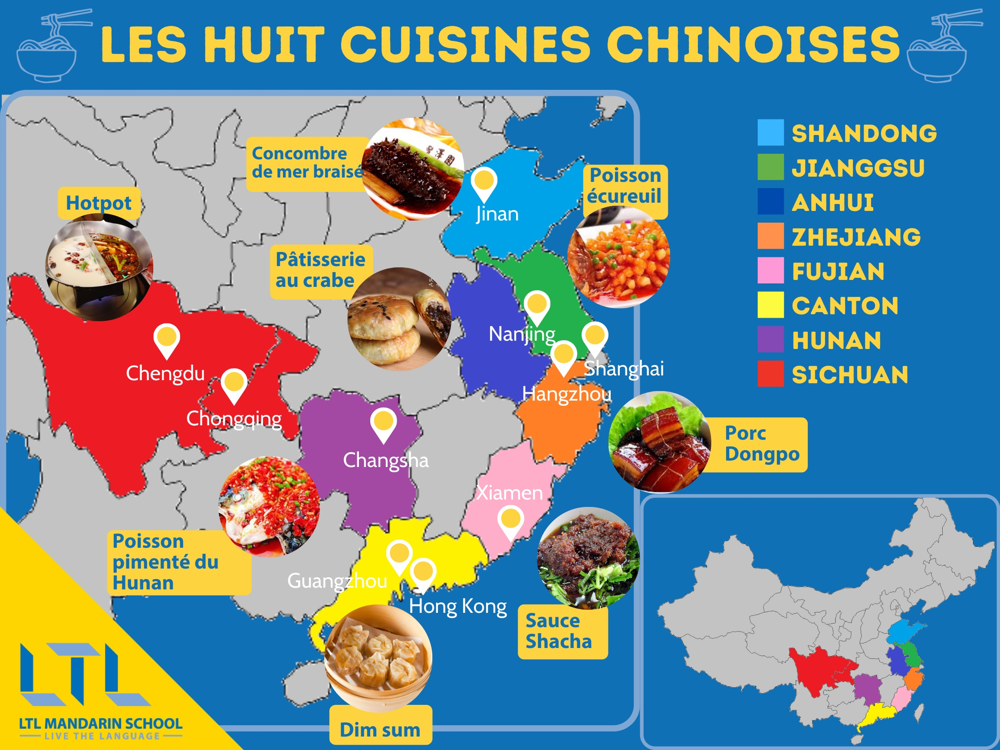
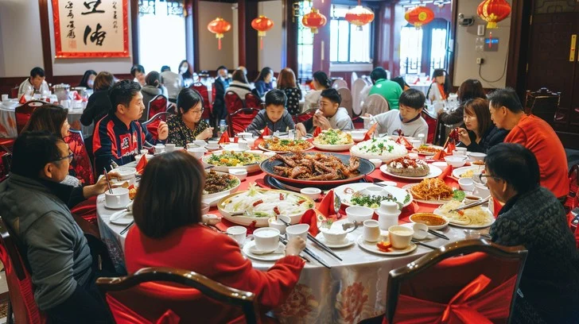

La Cuisine Chinoise
Présentation
La cuisine chinoise est l'une des plus réputées au monde et sans doute celle qui présente le plus de variations régionales. Les plats traditionnels chinois sont célèbres pour leur couleur, leur arôme, leur goût, leur signification et leur apparence. En raison de l'immensité du territoire chinois, il existe de nombreuses différences culinaires liées aux climats, à l'histoire, aux ingrédients locaux et aux coutumes. Les huit grandes cuisines régionales les plus connues sont celles du Shandong, du Jiangsu, de l'Anhui, du Zhejiang, du Fujian, du Guangdong, du Hunan et du Sichuan. Ces traditions culinaires reflètent la diversité culturelle et géographique de la Chine, influençant même les cuisines internationales.

Cuisines Régionales
Découvrez les huit grandes traditions culinaires chinoises, chacune influencée par son environnement local et son histoire. Cliquez sur une région pour en savoir plus sur ses plats emblématiques et ses caractéristiques uniques.


Déroulement d'un Repas
Un repas chinois traditionnel commence par l'accueil des invités par l'hôte autour d'une grande table ronde équipée d'un plateau tournant. Cela permet à chacun de se servir facilement des plats partagés, contrairement à la tradition occidentale où chaque convive a son assiette individuelle. Le placement à table respecte des règles de hiérarchie : les aînés ou les personnes d'autorité s'assoient au centre, souvent face à une télévision ou adossés à un mur, en signe de respect. Les plats sont servis en plusieurs vagues, en commençant par les entrées froides, suivies des plats chauds, et se terminant par des soupes ou des desserts. L'harmonie des saveurs (sucré, salé, acide, amer, piquant) est primordiale.
